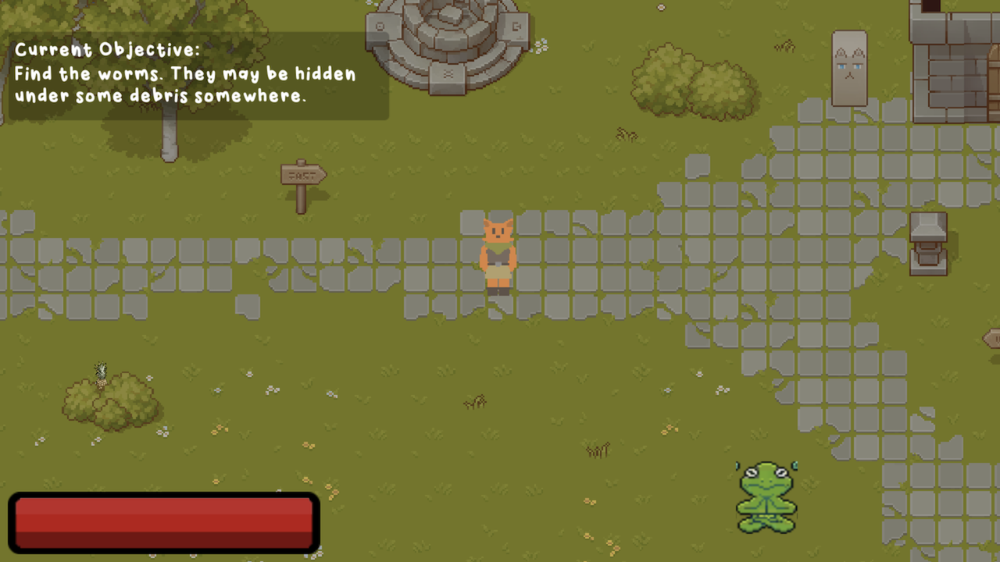

Willow's Quest
With Jack Burkhardt and Beck Mallwitz in NU's Game Development Studio course, we designed and developed a turn-based combat RPG from scratch. You can see Jack's blog for more information here.
Northwestern University
McCormick School of Engineering
BS/MS Computer Science '22
[family name] [at] u.northwestern.edu
([five one two]) 686-6846
I am a Software Engineer on Tableau Software's Platforms team
and recent graduate from Northwestern University
as a QuestBridge Match Scholar.
In Summer 2021, I was a Software Engineering intern at Tableau, where I
spearheaded an alternative continuous delivery solution to automate
versioning, releasing, and publishing of JVM binaries and artifacts
from Gradle projects in Tableau's modular monolith codebase.
I was also a Software Engineering intern on the Data Engineering team
at RigUp (now Workrise), where
I constructed a data catalog platform for their Business Intelligence team.
Finally, I was also a member of the Array of Things
research group at Argonne National Laboratory (ANL),
working with Pete Beckman
on time-series database solutions and machine learning-based sensor calibration for IoT devices.
My interests span information systems and data engineering, scalable
cloud infrastructure, DevOps, and user-centered design. Minus the jargon, I am motivated
by the idea of empowering people with high-quality data and software.
I graduated Summa Cum Laude with Bachelor and Master of Science degrees
in Computer Science, emphasizing on NU's research areas of
systems and networking and
human-computer interaction.
While studying at Northwesern, I was also affiliated with the following research groups:
Winter 2022
Fundamental overview of operating systems, including OS
structure, models, and abstractions, concurrency sources,
challenges, and control, scheduling and resource management,
virtual memory, device drivers, protection and security,
memory management, file systems, and design principles.
Taught by Peter Dinda.
Winter 2021
Systems programming with C in the Unix environment, introducing the hierarchy of abstractions and implementations
that comprise a modern computer system. Taught by Vincent St-Amour.
Spring 2020
Concepts and methods of Machine Learning with Python. Taught by Oliver Cossairt
and Florian Schiffers.
Fall 2019
Functional Programming with the Racket Student Languages, following Structure and Interpretation of Computer Programs,
by Harold Abelson and Gerald Jay Sussman. Taught by Ian Horswill.
Upon graduation, I received the Ovid W. Eshbach Award,
awarded to who the graduating class feels most exemplifies the ideal engineering student.
I also received
2021 Student Hero Award
from Northwestern's Computer Science department.
My favorite languages right now are Java, C/C++, Rust, Go, and Racket.
When I'm not coding, I spend the rest of my time enjoying video games,
playing with terminals and text editors, riding trains and subways,
listening to indie music, traveling, playing my cello, touring art
and history museums, learning, and teaching.
Thanks for visiting! Below are a few projects I've worked on. Feel free to check them out.
With Jack Burkhardt and Beck Mallwitz in NU's Game Development Studio course, we designed and developed a turn-based combat RPG from scratch. You can see Jack's blog for more information here.
With the Platforms team at Tableau Software, I developed a continuous delivery soltuion for automated versioning, publishing, and releasing of JVM git module projects via custom plugins for the Gradle build tool.
With Peter Dinda and Nick Wanninger at the Prescience Lab, I developed a port of the Nautilus Aerokernel for RISC-V hardware to explore the platform's applications and requirements as a target of interest. You can view the current repository here.

With the Data Engineering team at RigUp, I developed a data catalog and its infrastructure to boost productivity and insights for RigUp's analysts. This project utilized Lyft's open source Amundsen platform, GCP, Snowflake, Tableau, Flask, React, Docker, and K8s.

With Marcelo Worsley at tiilt, I developed voice and gaze interaction platform using Java, Python, and JavaScript to facilitate accessible and equitable gameplay in Minecraft. You can view the current repository here.

As an ongoing personal project, I'm developing a web app using React to access Spotify's Web API. The app allows users explore their library and top artists and songs to visualize their musical data. If you have a Spotify account, you can try it out for yourself here.

With Jason Wilson in NU's Affective Computing course, I developed a component of an affective agent to train volunteers for emotional support services. The component approximates emotions from facial expressions using OpenFace, and the agent builds on Microsoft's \psi framework.

With Pete Beckman at ANL, I implemented a new PostgreSQL database and infrastructure to manage time-series environmental data maintained by the AoT research group. I then used the data for developing a sensor calibration model combining supervised and unsupervised ML models.

As a group in NU's DTC course, we designed a portable changing table to facilitate changing of a 9-year old with cerebral palsy. The device allows the caretaker to change the child within the privacy of a handicap stall. The design recieved recognition from the Segal Design Institute.